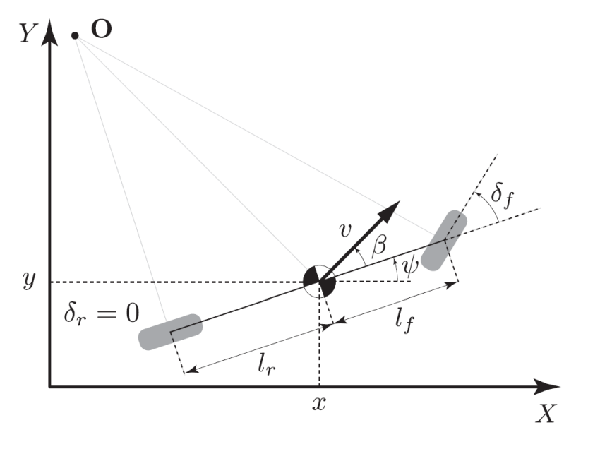

Capstone Projects, Labs, Writeups
This paper explores multi-robot motion planning strategies for quadruped robots. Here, we present three distinct methods: a sequential RRT-Connect (Rapidly Exploring Random Tree Planner), a joint state-space RRT-Connect Planner, and a Conflict Based Search. Our study showcases the success of each approach by generating kino-dynamically feasible and collision-free body trajectories for multiple legged robots navigating diverse terrain. Leveraging Quad-SDK, a open-source ROS-based framework designed for quadruped locomotion, we incorporate its footstep planner and low-level motor controller to implement these strategies. Applying all three global planner techniques proved successful in most scenarios with the conflict based planner approach having the lowest cost to goal. The sequential RRT had the quickest solve time due to its more simplistic approach.
Applied Skills: RRT, Conflict Based Search, C++, Multi-Robot Motion Planning
In this paper we show a trajectory planning technique that mimics a monkey bar robot swinging from bar to bar. Using a hybrid system direct collocation (DIRCOL) trajectory optimization, we successfully demonstrate the robot swinging up from a dead hang to catch the first bar and swing to the subsequent bars. This DIRCOL technique was tested on various mass distributions in the robot as well as different bar separation distances to understand the behavior with varying parameters. In addition, we show the importance of a free time setup on the cost function in producing consistent feasible trajectories using this DIRCOL technique.
Applied Skills: DIRCOL, Hybrid Systems, Lagrangian Dynamics, iPOPT Trajectory Optimization
In recent years, there has been a large research focus on dense video captioning.
Video captioning has applications in many fields such as autonomous driving,
video surveillance and creating captions for those with visual impairments. As
such, a novel approach is proposed by employing language models (LM) to help to
semantically align video features in an attempt to improve the overall performance
of dense video captioning. The baseline model for comparison, End-to-end dense
video captioning with parallel decoding (PDVC) [1], produced strong results
compared to many state of the art video captioning frameworks. PDVC is trained
on the ActivityNet and YouCook2 datasets but for this study only YouCook2
was used due to computational capacity limits. We propose the incorporation
of semantic alignment through the addition of a tuner network before the video
features are passed through the PDVC framework. Ablations were ran for different
tuner architectures and overall, the modified PDVC framework outperformed the
baseline PDVC in many evaluation metrics. Promising future extensions with
Semantic alignment and Dense Video Captioning remain with its application to
larger and more comprehensive data sets.
Applied Skills: PyTorch, Linux, GCP, Python, Deep Learning
Objective:
While taking CMU’s 24.678, my team and I decided to apply traditional computer vision techniques to
tackle the growing incidence rates of fatal injuries on construction sites nationwide. As the number of
such injuries has risen by nearly 90% in the last three years, my team devised a method to improve
worker awareness and safety on jobsites, maximizing company profits and reducing worker downtime.
Solution:
My team developed a system that combines image processing and point cloud-based computer vision
methods to track the movement of workers around construction sites and notify them when they enter
potentially dangerous regions. For simplicity, we targeted the most common construction site hazard,
workers being struck by falling objects. Ideally, we’d like this technology to allow us to prevent
some of the accidents we see every year.
To solve this problem, we propose a multistep method. First, we preprocess our worksite by
selecting four fixed reference points in the camera’s field of view. Given a video stream of the
worksite, we need a reliable way to make worker positions in the image to worker positions in space.
To do this, we operate under the assumption that the camera position is fixed, and all workers are
on the same plane (the ground). This allows us to generate a static transformation that maps pixel
values to world coordinate values (assuming the worksite shape and dimensions are known). This allows
us to account for the unique perspective of our camera and generate the respective transformation
matrix.
Applied Skills: OpenCV, Python, Coordinate Transformations, Object Detection, Transfer Learning
Objective:
As a student in 24.695, CMU’s Control Theory class, I was assigned the challenge of creating an
efficient controller and estimator for a small self-driving vehicle. Given the projected expansion
of the driverless car industry to reach 93 billion by 2028, this project is geared towards
addressing that growth. For this project, we drew inspiration from CMU’s yearly buggy competition
for our track design and developed an optimal controller for the car.
Solution:

To approximate the motion of the car, a simple bicycle model was used to define system dynamics. The
car is modeled as a two wheeled vehicle with two degrees of freedom described by its longitudinal
and lateral dynamics. As such, I designed a two-part controller that generates control commands
including desired steering angle δ and longitudinal force f.
Given a desired trajectory of waypoints, I implemented a:
Applied Skills: Python, Webots, Extended Kalman Filter SLAM, MPC, LQR, State Feedback, PID